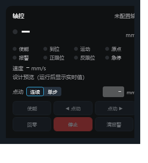
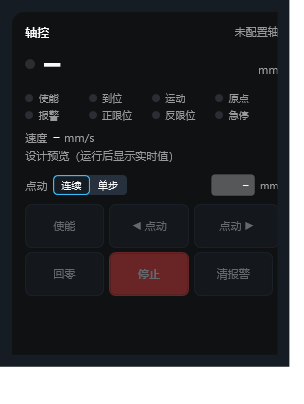
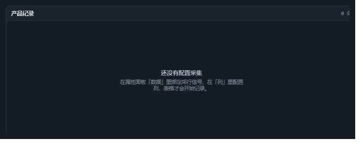
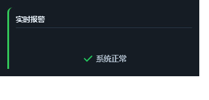
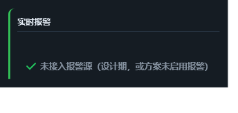

轴面板 Hmi.AxisPanel
当前

命令按钮 29px 高、字号 10、间距 5
改进后

命令按钮 44px 高、字号 11、间距 6；面板默认高 310→380
| 改动 | 理由 |
|---|---|
MinHeight 29 → 44，Padding 8,3 → 10,6，字号 10 → 11，间距 5 → 6 |
触摸命中区标准 ≥ 44px。原来 29px 的按钮戴手套点动时极易按到相邻键——这是会审 U3 与会审安全项 S1 的共同结论。 |
| 面板默认高度 310 → 380 | 实测教训：只把按钮改高，310px 高的面板会把最后一行（回零/停止/清报警）裁掉。改尺寸必须连带改默认高度，否则"改好了"只存在于属性表里。 |
| 未改：未配置轴时按钮禁用 | 待做 需要把命令按钮的 IsEnabled 与"有没有轴"绑定；涉及运行时状态与既有断言（六个命名件），风险高于纯尺寸改动，留给下一批。 |
| 未改：下发值 / 实际值加标签 | 待做 要在模板里拆成"目标 / 当前"两行标签，属于布局改动，与上面那条一起做更省事。 |
| 撤销：状态点只靠颜色（A1）、失能入口（A2）、急停与点动（S3） | 用户裁定 使能本来就是切换开关（绿=使能、灰=失能）；状态点是扫一眼的辅助信息；急停联锁在流程里断使能，界面不重复兜底。 |
数据表格 Hmi.DataGrid
当前

配了 3 列仍显示"还没有配置采集"；无列头
改进后

本轮未改（与左侧相同）
本轮没动这一块，原因写清楚：两条 P1（"未绑采集信号"与"无数据"文案分开、设计期渲染列头）
都要改空态分支与列头渲染逻辑，而表格的空态由"采集信号是否绑定"驱动、列头由运行时列集合生成。
在没装配运行态上下文的条件下盲改，很可能出现"设计期有列头、运行期没有"的双分支问题。
计划：与"补运行态出图"一起做——先让探针能渲染有行/有列头的状态，再改文案与列头。
| 待做 | 理由 |
|---|---|
| P1 两种空态文案分开 | "未绑定采集信号"是配置问题、"没有数据"是事实；同一句提示会让配列的人以为配错了。 |
| P1 设计期显示列头 | 配了列却看不到列头，无法确认列宽/对齐/格式。 |
| P2 禁用态可辨 | 当前禁用与正常几乎无差别（两张截图肉眼一致）。 |
| P3 "采信"笔误 | 应为"采集"。 |
报警条 Hmi.AlarmBanner
当前

空态只写"系统正常"（没接报警源也一样）
改进后

未接报警源时明确写出来，并降低不透明度
| 改动 | 理由 |
|---|---|
| 空态区分「未接入报警源」与「系统正常」 | 静默假正常：工程忘了启用报警时，界面照样显示"系统正常"，比不显示更危险。现在按"有没有报警源"分别给文案。 |
| 形态：单行跑马灯（默认）/ 卡片列表（可选） | 按用户裁定：从右往左滚、不带确认、只要触发条件为 ON 就进队列；卡片列表 140px 高太占画面。 |
| 悬浮暂停 | 鼠标停在条上停住，移开继续；恢复时扣掉暂停时长而不是清零重来，否则文字会跳回起点、正在读的人跟丢。 |
| 未做：手动拖动后暂停 / 新报警是否打断阅读 | 下一批 建议加 PauseOnUserScrollSeconds（默认 10s），与"新报警插队"一起定。 |
其它控件（前几轮已完成）
这些控件已在更早的批次完成"审查 → 改版 → 断言"，对照图在各自的设计基线里。
| 控件 | 已做的改动 | 对照 |
|---|---|---|
Hmi.Button |
四态：按下压暗 18%、键盘焦点环（仅键盘导航出现）、危险变体 Danger、最小可点 36×72、禁用改箭头光标 + 暗蒙版（不再整体半透明）、悬停同时提亮边框 |
按钮审查稿 |
Hmi.IOField |
可写铅笔常显（触摸屏无 hover）、禁用态（箭头光标 + 底透明 + 字降亮）、数值与单位分列（小数点对齐）、ValueOnlyText 新只读属性 |
数值域/滑块审查稿 |
Hmi.Slider |
数值气泡跟手（横向）、量程标注、命中区 44px、禁用态降饱和 | 同上 |
Hmi.BarChart / Hmi.PieChart |
「数据项」改成「配置数据项…」按钮 + 变量选择器（原来只能手打变量名）；数据项编解码与轴范围/合并规则已断言 | 图表与报警表基线 |
Hmi.Report |
「从账本导入列」：读 History 最新 CSV 表头一键生成列配置 | 报表/动态画线基线 |
还没审的：
Hmi.PipeRun（管线，已发现"可拖动/可改尺寸但无意义"）、Hmi.Symbol（工艺符号 30 种）、
Hmi.KpiBoard、Hmi.MultiTrend、Hmi.RecipePanel、Hmi.SubPage。
下一轮按"使用频率 × 出错后果"排序继续。